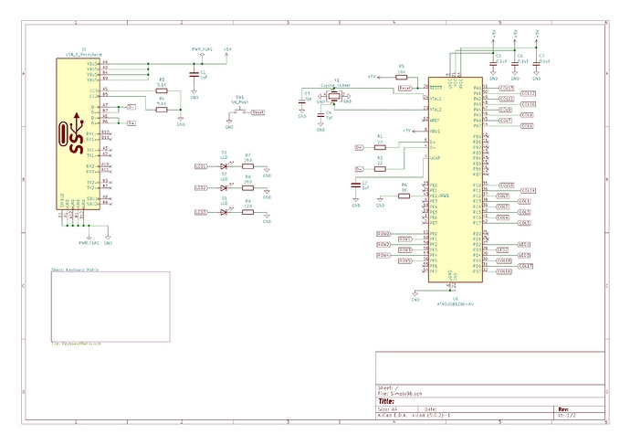

The Simply96
The board
This is my first keyboard design, I started working on it early 2018. This is a simple TK layout board, the name comes from its simple design and the fact that it has exactly 96 switches for the ANSI version.
Time to completion: 1 year.
Number of units: 1.
Material and finishes:
- Top piece beadblasted and gray anodized 6062 aluminum.
- Bottom piece laser cut 2mm thick 304 stainless steel plate, beadblasted.
Please look at the following Keebtalk link if you want to know more details on the project development.
Design choices
At that time I was already starting to experience moderate pain in my hands and arms due to heavy use of full size boards.
I knew I needed something more compact but was not ready yet to get rid of the numpad.
At the same time I didn't want to disturb too much the muscle memory gained after 30 years of coding practice.
Discovered the TK layout and found myself confident that I could adapt to it.
PCB design
That was my feature list:
-
Both ANSI and ISO compatibility.
-
Hotswap.
-
Costar stabilizers (because the features described before was forcing me to do that).
-
No lighting.
-
Led indicators for CapsLock/NumLock/ScrollLock.
-
QMK firmware.
KiCad has been used for the design.
I had experience with Atmel MCUs before, so picked a beefy AT90USB1286 with lots of RAM and IO pins.
Case design
Had no experience with CNC manufacturing services before so limited the risks by having a design with only one machined piece of aluminium.
But I wanted to have an integrated plate design and that increased case design complexity quite a lot (and so my stress).
Case feature list:
-
One CNC'd top piece design with integrated plate.
-
2mm stainless steel laser cut bottom part.
-
Ergonomic low 3 degree typing angle.
Fusion360 has been used for the case design, both for the CNC top piece and the laser cut bottom plate.
Pictures
Key layout design
PCB

Case
Case assembly